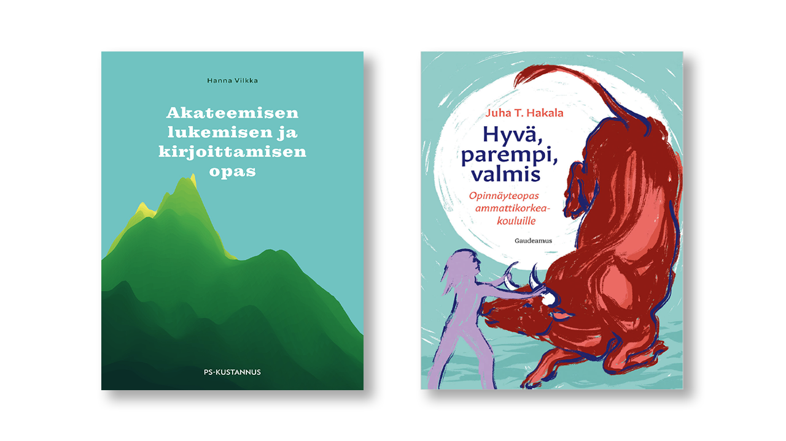

4: Akateeminen tyyli
Akateeminen kirjoittaminen

Kuvio 2: Akateemista lukemista ja kirjoittamista kannattaa opetella opiskeluiden aikana. Yksi tapa on tutustua KAMK:n e-kirjaston kirjoihin. Näistä näkyy kuvassa kaksi: Akateemisen lukemisen ja kirjoittamisen opas (Vilkka H. 2020) sekä Hyvä, parempi, valmis: Opinnäytetyöopas ammattikorkeakouluille (Takala, J. 2023)
Akateeminen kirjoittaminen on tiedonluomisen ja luovan ongelmanratkaisun metodi. Siihen liittyviä taitoja ovat tiedonhakutaidot, tiedonarviointitaidot sekä tiedon soveltamisen taito. Ammattikorkeakoulun koulutuksen yksi pyrkimys on, että kykenet työelämässä luomaan selvityksiä tai raportteja, joiden sisältö on johdonmukaista ja perusteltua. Koulutuksen aikana näitä tekstilajeja ovat opinnäytetyö ja oppimispäiväkirja, mutta työelämässä saatat joutua vertailemaan, mikä tarjolla olevista palveluista sopii parhaiten yrityksen käyttötarkoitukseen 1. Sinun tulisi osata ajatella analyyttisesti ja luoda sellainen tutkimuksellinen asetelma, joka mahdollistaa palveluiden vertailemisen systemaattisesti. Vertailun tulokset tulee osata esittää siten, että esihenkilö tai muu tilaaja ymmärtää sinun löydöksesi, ja kyetä osoittamaan, mistä olet hankkinut tietosi ja millä perusteella arvioit sen olevan uskottavaa tietoa.
Oppimispäiväkirjan tyyli
Yllä mainitussa Akateemisen lukemisen ja kirjoittamisen oppassa on oma, hyvin lyhyt alalukunsa oppimispäiväkirjasta tyylilajina. Siitä on lainaus alla:
Quote
"Oppimispäiväkirja on oman oppimisen reflektointia taaksepäin ja eteenpäin. Oppimispäiväkirja pyrkii olemaan kokonaisuus, jossa opintojaksolla opitun avulla pystyt laventamaan aiempaa osaamistasi tai muuttamaan oma ajattelutapaasi. Merkittävintä tekstissä ovat opintojaksolla esitetyt, sinulle tärkeät käsitteet tai teoriat, joiden olet huomannut muuttaneen ajatteluasi tai asenteitasi."
Hanna Vilkka 1
Huomaathan, että oppimispäiväkirjan tekstissä saa kuulua sinun oma äänesi. Tyylin tulee olla asiallista, mutta sen ei tarvitse olla kuivaa. Oppimispäiväkirjan saa kirjoittaa minä-muodossa.
Oppimispäiväkirja ei voi kuitenkaan olla pelkkää reflektiivistä sisäistä pohdintaa ja omien tunteiden tulkintaa. Arvosteluasteikon keskiössä on se, kuinka hyvin olet ymmärtänyt opintojakson sisällön ja miten hyvin osaat soveltaa sitä. Varmista, että merkinnöistä käy ilmi sinun osaamisesi taso.
Vinkkejä hyvään tyyliin
Lue opinnäytetöitä
Kannattaa tutustua muiden opiskelijoiden kirjoittamiin opinnäytetöihin. Millainen niiden rakenne on? Millaista on kieli? Tunnistatko mielestäsi hyvän opinnäytetyön huonosta. Miten? Kuinka koodisnippettejä käytetään ja kuinka pitkiä niissä näkyvä koodi tyypillisesti on? Kuinka koodisnippettejä käsitellään leipätekstissä?
Esimerkkejä löydät Theseus-palvelusta, esimerkiksi hakemalla avainsanalla data science tai data-analytiikka. Vaihtoehtoisesti voit unohtaa hakusanat ja etsiä rajaimien avulla: valitse kokoelma Kajaanin ammattikorkeakoulu . Tämän jälkeen rajaa hakutuloksia koulutusalan mukaan Tieto- ja viestintätekniikka, lopulta vielä haluamallasi avainsanalla, kuten ohjelmistonkehitys. Tässä suora linkki juuri tähän hakuun: Theseus: Kajaanin ammattikorkeakoulu, data science, tieto- ja viestintätekniikka, ohjelmistonkehitys.
Yksi löytyvistä opinnäytetöistä on esimerkiksi Jari Väisäsen Modbus TCP/IP -palvelimen toteutus vuodelta 2020.
Lue alan julkaisuja
Silmäile myös alan julkaisuja, joita löytyy usein termillä whitepaper tai scholarly article. Millaista kieltä ja tyyliasua niissä käytetään? Mihin lähteisiin niissä viitataan ja miten? Alla pari suositusta:
- Cornell Uni (Michael, P. et. al.): Noise-Coded Illumination
- Uni of Westminster (Al-batat, R. et. al)An End-to-End Automated License Plate Recognition System Using YOLO Based Vehicle and License Plate Detection with Vehicle Classification
- Databricks: Lakehouse: A New Generation of Open Platforms that Unify Data Warehousing and Advanced Analytics
- Google: The Google File System
- Netflix: Abuse and Fraud Detection in Streaming Services Using Heuristic-Aware Machine Learning
- Google: Attention Is All You Need
- Garmin: Effects of Missing Data on Heart Rate Variability Measured From A Smartwatch: Exploratory Observational Study
Huomaa kuitenkin, että yllä listatut ovat akateemisen, tutkivan kentän tuotoksia. Me teemme ammattikorkeakoulussa useimmiten toiminnallisia raportteja (ja opinnäytetöitä). Tämä aiheuttaa eroavaisuuksia, kuten sen, että toiminnallisessa työssä on usein mukana projektisuunnitelma, vaatimusmääritelmä, aikataulu ja mahdollinen budjetti, jotka eivät ole tyypillisiä akateemisissa tutkimuksissa. Näihin dokumentteihin sinut tutustutaan ensimmäisten opiskeluvuosien aikana – pidä tämä suunnitelmallisuus kaikissa projekteissa mukana, vaikka sitä ei erikseen mainittaisikaan. Yhtä valmista sapluunaa ei ole mahdollista antaa, koska projektin aihe ja luonne vaikuttavat raportoinnin sisältöön, muotoon ja eri osioiden tarpeellisuuteen.
Bonuksena mainittakoon DJangon luojan sivusto: Simon Willison: TIL. Sivusto sisältää lyhyitä kirjoituksia erilaisista teknisistä aiheista. Tyyliltään ne ovat rentoja, mutta asiallisia.